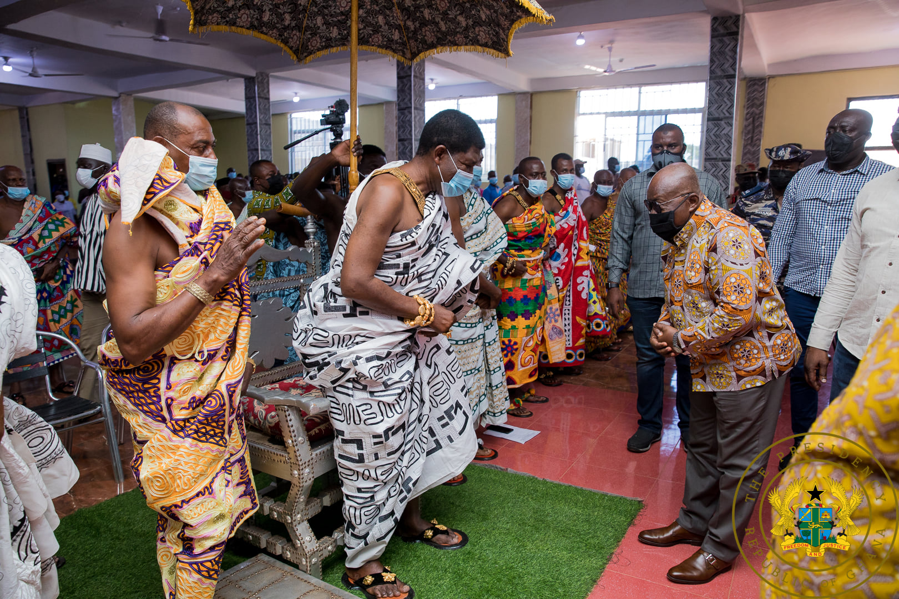
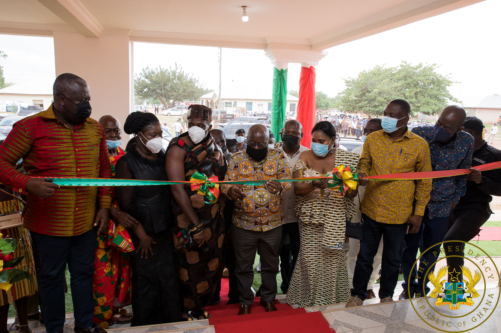

A special assistant at the Chief of Staff's Office, Mrs Harriet Oppong has urged the sons and daughters of Nkoranza to contribute their utmost quota to the development of Nkoranzaman. Speaking at the sielines of the President's visit to Nkoranza, the special assistant posited, the time has come for indigenes of the paramouncy to do all they can to promote the development of the great and historic municipality. "We are in this together", she said. She enumerated various Government interventions that is shaping Nkoranza as a community and Ghana as a whole. She mentioned the commencement of phase 2-works on the Jema Nkwanta-Asekye road, which when completed she said, would shed three (3) hours of commute time off road trips across the North, Bono East and Ashanti regions. On agriculture, which is the main stay of the people of the area, she opined the newly built warehouses at Yefri and Donkro Nkwanta would eliminate post-harvest losses, adding that the supply of 100,000 cashew seedlings yearly to tree crop farmers is a welcome initiative. The President used the occasion to also reiterate his commitment to build a district Hospital for Nkoranza as part of Agenda 111. Located in the Bono East of Ghana, Nkoranza boast of several high profile figures in all spheres and sectors of Ghana.
Some pictures and scenes during the President's visit
Below are some photos and sounds at Nkoranza.

